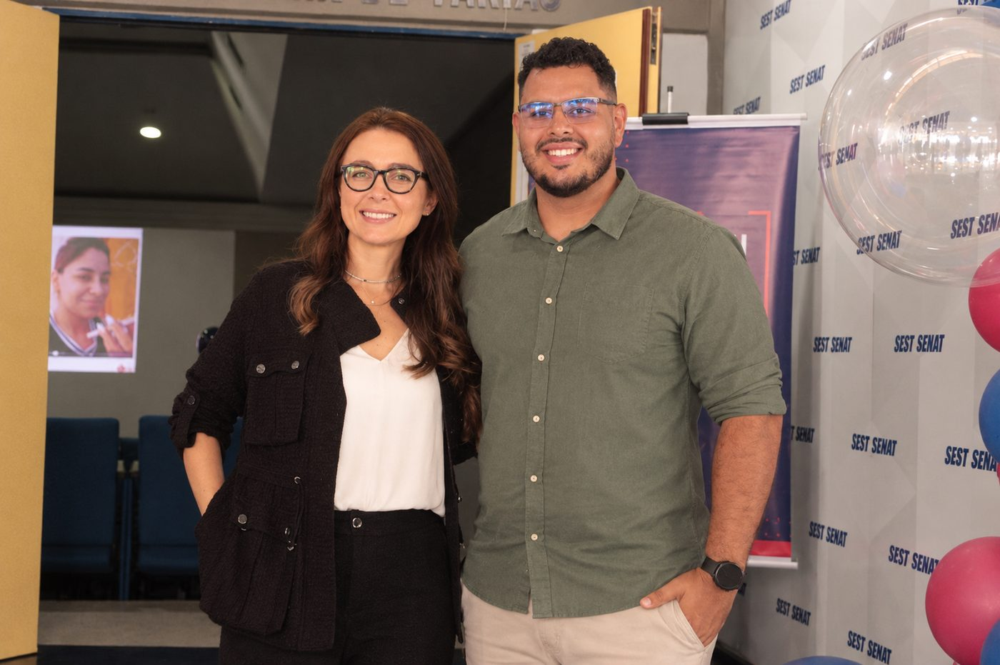

Edição de 16/11/2026 · Curadoria semanal
QualiCX Brasil
Revista de Qualidade, Customer Experience e Contact Center. Notícias, artigos e boas práticas para quem transforma a Voz do Cliente em decisão.
Contact Center
Qualidade de serviço do Contact Center da Associação Montepio supera média do setor
Experiência do cliente
Experiência do cliente determina a fidelização
Experiência do cliente
Da ciência à experiência do cliente: LiveSpo deixa sua marca em premiações internacionais.
Experiência do cliente
Jornadas espelhadas: por que a experiência do cliente começa no RH
Experiência do cliente
Hapvida evolui modelo operacional para fortalecer eficiência, rentabilidade e experiência do cliente
Mais notícias da semana Ver todas →
IA e tecnologia quasa.io
quasa.io
Quasa: análise do Fin — IA autónoma para a experiência do cliente
Regulação e SAC A Crítica de Campo Grande
A Crítica de Campo Grande
Procon de Três Lagoas informa novas regras do SAC, em vigor desde 2 de novembro
Regulação e SAC Prefeitura de Colatina
Prefeitura de Colatina
Procon de Colatina orienta consumidores para compras seguras na Black Friday
Regulação e SAC Prefeitura de Aracaju
Prefeitura de Aracaju
Crise hídrica: Procon Aracaju realiza levantamento de preços para orientar consumidores
Regulação e SAC Mobile Time
Mobile Time
Novas regras do SAC podem inviabilizar fintechs de pequeno porte, diz Blip
Regulação e SAC Portal Palhoça
Portal Palhoça
Black Friday: Procon/SC relembra problemas de 2025 e orienta consumidores para a data
Contact Center Valor Econômico
Valor Econômico
Franquia de call center é a maior tendência de 2027
IA e tecnologia Unite.AI
Unite.AI
Quiq lança integração de IA de voz para o Zoom Contact Center
Colaboração
Projeto Promotor, uma iniciativa de qualidade da qual participei
Conhecer o projeto Saiba mais“Não Só de Call Center Vive a Experiência do Cliente.”André Luiz Maciel, editor

Artigos Acervo →

Artigo
Expertise360: o que o atendimento protagonista ensina à área de Qualidade
Artigo
O Reclame Aqui é uma armadilha para as empresas?

Artigo